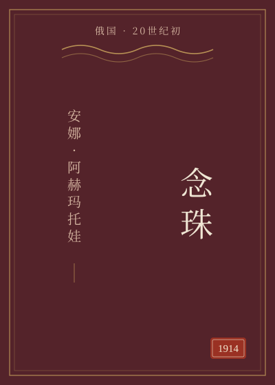
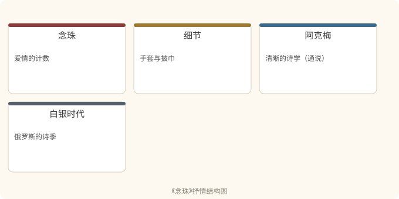

念珠
一、基本信息
| 作者 | 阿赫玛托娃 |
|---|---|
| 成书/出版 | 1914年（作者页 B144 口径：黄昏（1912）、念珠（1914）） Anna Akhmatova — Encyclopaedia Britannica（百科全书） |
| 国别/地区 | 俄国 |
| 时代 | 现当代 · 20世纪初 |
| 体裁 | 诗集 |
| 语言 | 俄语 |

《念珠》抒情结构图（主题·结构图）
二、创作背景
作者页（B144）：阿赫玛托娃 major_works 载'黄昏（1912）、念珠（1914）'（B144 作者页定位，详见 anhunqu 条核对）。
阿赫玛托娃为阿克梅派代表（B144 作者页语境——通说待核）。
三、内容脉络
爱情抒情诗：'我披上右手的手套'式的细节（诗风通说待核）。
四、主要人物表
| 人物 | 身份 | 说明 |
|---|---|---|
| 抒情女声 | 诗人 | 阿克梅派的细节（通说待核） |
五、主题与艺术特点
- 爱情抒情：失去与等待（通说）。
- 细节的诗学（通说待核）。
- 阿克梅派的'清晰'（通说待核）。
六、影响与评论
- 作者页：阿赫玛托娃诗集谱系（B144 作者页口径）。
Anna Akhmatova — Encyclopaedia Britannica（百科全书） - 作者页：阿赫玛托娃为俄罗斯白银时代代表（B144 作者级定位）。
Anna Akhmatova — Encyclopaedia Britannica（百科全书）
七、阅读建议
难点
- 俄语诗歌的形式感。
- 白银时代语境。
- 《阿赫玛托娃诗文集》（人民文学出版社/上海译文版本，通说待核）。
- 俄文原版（公有领域渐近）。
先《黄昏》后《念珠》→《安魂曲》。
八、待核实
- 1914年出版细节核对。
- 阿克梅派（Acméism）定义核对。
- 名篇（《灰眼睛国王》等）待核。
本页主要来源
阿赫玛托娃的其他收录作品：安魂曲